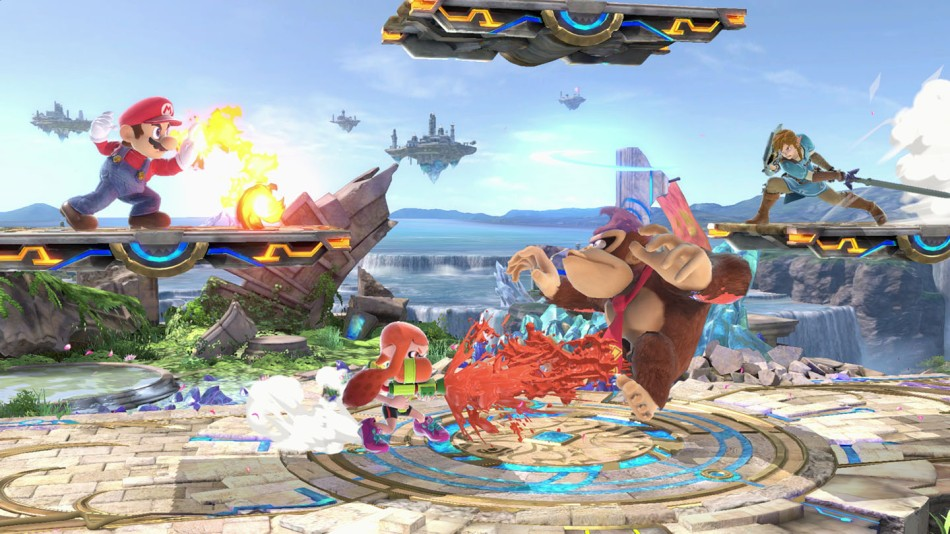

A diferecia de otros juegos de lucha tradicionales, en Smash Bros el objetivo es sacar al o los oponentes del escenario, literalmente mandandolos a volar o provocando que se caigan. Además de que aqui no se maneja lo que es el porcentaje de vida, si no mas bien el daño, entre mas porcentaje de daño tengas mas lejos saldras volando y mas dificil sera que sobrevivas |
|  |
Smash Bros tiene muchos modos de juego, como batalla de vidas, modo historia, Smash especial, Multijugador de hasta 8 personas, Tropa Smash y muchas otras modalidades de juego muy divertidas y pensadas para cada tipo de jugador |